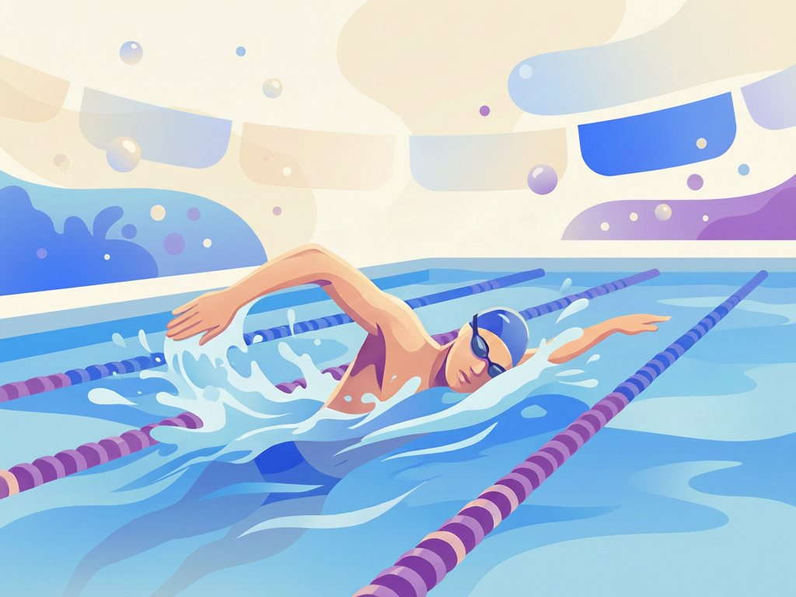
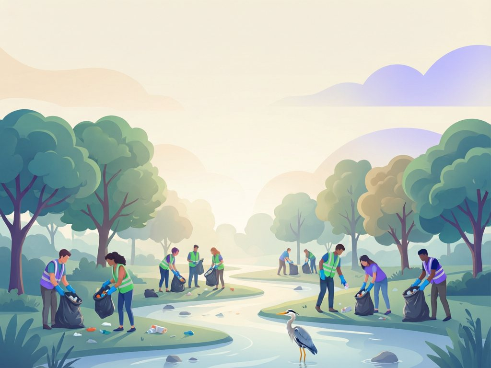

Hi, I’m John Doe.
This is my story.
A computer science student from Nairobi who swims competitively, plays football, runs track, and gives back to the community — all backed by photos, certificates, and results you can browse right here.
More than a résumé
I believe the best way to be known is to show, not just tell. That’s why this site pairs every claim with evidence — the gala where I medaled, the certificate I earned, the clean-up I organised.
I split my time between lectures and laboratories at university, morning swim training, weekend matches, and community programmes. Staying busy taught me discipline, teamwork, and how to lead — lessons that show up in everything I do.
When I’m not competing or studying, you’ll find me building small web projects, mentoring junior students, or singing tenor in the choir.
Quick facts
- Full nameJohn Doe
- Age20
- Based inNairobi, Kenya
- LanguagesEnglish · Kiswahili
- CurrentlyBSc Computer Science
- StatusOpen to internships
Every claim, with proof
Four chapters of my journey — each one with photos, certificates, and results attached.

Education
Primary school to university — grades, milestones, and certificates.
View education
Sports
Swimming galas, football seasons, and track meets — results included.
View sports
Extracurricular Activities
Debate, music, robotics, and leadership roles across school life.
View activities
Volunteering & Community
Clean-ups, mentoring, and outreach — over 120 hours of service.
View volunteeringHiring, admitting, or just curious?
I’m open to internships, attachments, and sports scholarships. The fastest way to reach me is email — I reply within a day.